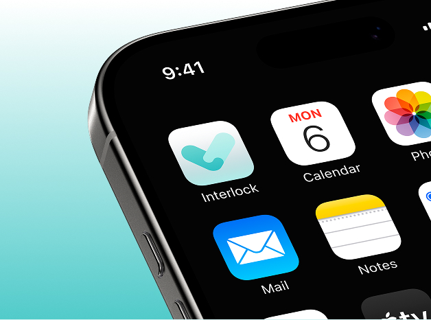
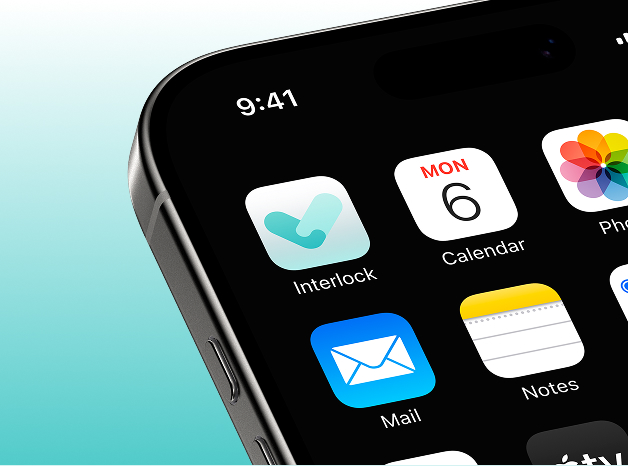

1. 2시간 이내 사고 보고 92% 누락
사고가 발생해도 적정시기에 대부분 보고를 하지않아 조치 및 2차 사고를
재발하게 됩니다.
2. 통제 불가능한 개인의 과실
건설사들에 대한 제재 수위가 강화되어 지속적인 안전관리 방침이
강회되고 있지만 현장 특성상 일용직이 많아 근로자 개인을 모두
통제하기엔 한계가 있습니다.
3. 끝없는 업무, 관리자 사고 저하
인력 공백으로 인한 일상적인 야근과 주말 출근으로 인한 일과 삶의
불균형을 만들어 냅니다.
심리적인 압박과 업무 과부화로 인해
직종의 회의감과 고민으로 현장을 떠나는 관리자가 발생합니다.

 
